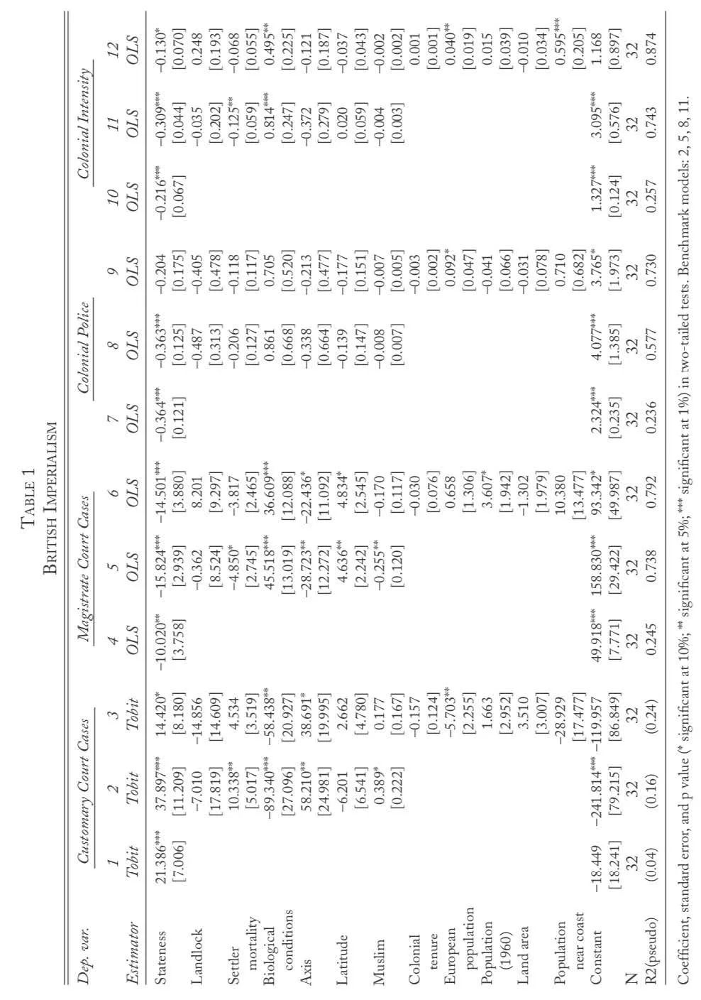
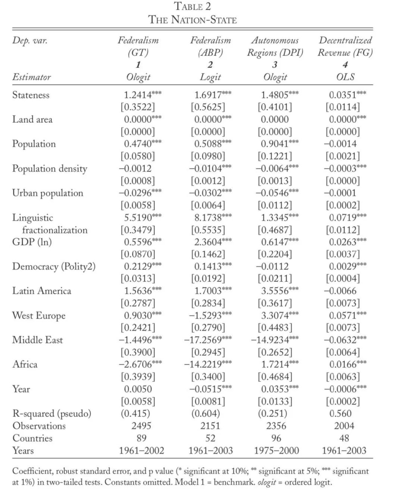

收录于合集
#历史政治学 58 个
#比较政治学 121 个
#国家建构与国家发展 70 个
文献来源： Gerring, J., Ziblatt, D., Van Gorp, J., & Arevalo, J. (2011). An institutional theory of direct and indirect rule. World Politics , 63(3), 377-433.
作者简介：
John Gerring，德州大学奥斯汀分校政府系教授，研究领域为比较政治学和政治学方法论
Daniel Ziblatt，哈佛大学政府系教授，研究领域为民主化、政党、国家构建和历史政治经济学
Johan Van Gorp，沙迦美国大学国际研究系助理教授
Julián Arévalo，现为哥伦比亚国立大学经济学系教授
在制度设计中，统治单位A能让渡给下属单位B多少权威是一个关键问题。直接统治的特征是决策权的集中，而间接统治的特征则是在一个分权框架中，重要事项的决策权会被授予到下层主体。甚至同一个帝国也会有不同的统治形式，例如殖民时代，法国对塞内加尔实行直接统治，对其他地区却进行间接统治（编者注：中国的行政管理体系中也存在着这种差别）。那么这里就有一个关乎制度起源的根本性问题，究竟是何种原因导致了直接统治或是间接统治？
假说
围绕这一问题学者们提出了很多假说：
一是接近假说（Access hypothesis） ：认为A对B的统治形式受B相对于A可接近性（accessible) 程度的影响。地理位置，疾病，交通工具都会影响这种可接近性。
二是权力假说（Power hypothesis） : A 是否对B进行直接的控制要考虑其军事上的可行性和必要性。 这就要从A和B之间科技、军事、官僚体系、人口和经济来判断（两者的相对能力），A 相对于B更大的强制力优势将会导致一个更加直接的统治。
三是财富假说（Revenue hypothesis） : 统治体系的模式服务于A收益最大化的需要。
四是议程中心假说（Agenda-centered hypothesis） : 如果A拥有一个更具有改革性（ transformative）的议程，那么他就更有可能施行一个直接统治的体系。
五是差别/身份假说（Difference/identity hypothesis） : 政治权威的形态反映了构成A和B族群实践和身份对比的形态。国家、区域间的界限和关系应是对文化、政治和经济从属关系的反映。但这种理论有也存在分歧。一种观点认为是A和B越不同，两者之间越难以建立起成功的直接统治。第二种观点认为，A和B越不同，直接统治的建立就越有必要。
六是规范性假说（Normative hypothesis） : 行动者将会被独立于权力、财富和身份的适当性(appropriateness)逻辑所驱动。
七是民主假设（Democracy hypothesis） : A 和B之间的关系应有具备民主性质的机构调节，例如联合国这样的超国家机构。不过这种调节一般会形成一个较为去集中化的统治形式。
作者在这里提出， 下属单位先前的政治发展水平很重要。在其他条件相等的情况下，B更强的国家性(greater stateness)会导致A 和 B之间一个更为间接的统治模式。 但不论是直接/间接统治还是所谓的国家性，都是一个 程度问题 。因此，作者不仅仅关注他们的具体特征，更关注其所达到的管控的程度。
围绕作者核心假设的前提是统治者有一些特定的目标想要达成，例如财富收益、个人权力和地位等，他们希望在资源有限的环境下达成最大收益。如果统治者是具有革命色彩的，本身就寻求对既有制度的变革，那么这一理论可能并不适用。
理论
从委托- 代理理论的角度来看，A与B之间的统治形式的问题中，A就是委托者，B就是代理者。为了在双方之间维持一个间接统治的形式，那么委托者必须要确保代理者能够发挥其功能，也就是说B能够在其统治发挥预期的功能。A只和B这个进行治理的单一代理进行沟通，并对他进行监督、奖惩。但是 在制度化较低的地方，由于不存在有足够治理能力的单一主体，那么也不可能建立起间接统治的结构。
从维持政治秩序的角度看，任何想要从其领土上汲取资源的政权都必须要面对的根本性问题就是政治秩序的问题。没有政治秩序，A对B的统治权只能是徒劳无益的。 要维持政治秩序，统治者不可能只依靠强制力，重要的还是合法性。 如果B之前已经存在较为完备的国家性制度，那么间接统治能够让A以更小的成本维持政治秩序。如果在B已经具有较为完备的国家性制度时，A还想对其实行直接统治，那就必须对现有体系进行解构。这往往会导致更多不确定性和更多反抗。
从行动者动机的角度看，间接统治在本质上就是一份具有协商性质的制度安排，如果没有来自A和B领导人的积极参与，达成这样的制度安排是不可能的。在这样的协商中，A一般有更多的筹码，但B也有拒绝的可能。在此， B的国家性程度就会影响领导人决策的动机。 B的国家性程度越高，说明其领导人权威越依赖制度。政治制度在全面的强制力（往往恰好是A所拥有的）面前是很脆弱的。一旦制度被打破，那领导人的权力也就不复存在了。因此这样的领导人更有动机达成间接统治的协议。 而 在由多个有限权威治理的区域（如部落酋长）中，他们的政治权力不依靠正式的组织结构，集权化的行政官僚和先进的后勤保障。 因此， 面对军事威胁，他们的领导权并没有那么脆弱，而且很容易再生。
验证
作者首先用英帝国中伦敦与其各个殖民地所建立的统治关系来验证自己的假设。
Lange用四种方式来测量英帝国下的直接/间接统治程度。一是依靠习惯法裁决的案件数量占总案件数量比重；二是每千人地方法庭数量；三是殖民警察（非本地来源警力）占总人口比重；四是对殖民政府干预密度的总体测量。 作者认为，英帝国的统治建立在法律的基础上（法律是否公正则是另一个问题了），所以对司法机构和人员的统计能够很好的反映帝国内部不同殖民地的统治形式。所有四类指标都是1955年的数据。其中还排除了人口独立时不足十万的殖民地，与非英国殖民地合并独立的殖民地（如英属喀麦隆），正式殖民时间少于30年的殖民地和白人定居的殖民地（如澳大利亚、美国），以及毗邻帝国核心的殖民地（爱尔兰）。最终留下了32个可供研究的殖民地。
对于国家性的测量则来自于民族志世界地图集数据库（Ethnographic World Atlas Database）。给予这一数据库的实地报告，Murdock和其同事把每个数据库中的地方共同体都根据司法- 行政水平做了编码。1代表没有政治权威，2代表只有小型部落酋长，3代表有大型酋长的统治，4代表存在国家，5代表存在大型国家。这一数据也与Lange, Mahoney, vom Hau等人制作的前殖民时代发展水平高度相关。
回归结果如下图

作者把对因变量的四种测量方式分别单独作为回归的因变量。每类因变量下根据控制变量的不同方案设置了三种模型。最终结果有力的支持了作者的假设。
为了强化自身理论的普遍性，作者又尝试在全世界范围内探讨先前政治发展水平和统治结构之间的关系。为了测量历史上的国家性，作者依靠Louis Putterman和其同事的工作，基于不列颠百科全书的历史数据，他们制作了国家古代指数（State Antiquity Index），涉及119个当代国家的历史数据。历史数据跨度为公元1世纪到1950年，每50年为一个单位。关于国家性的赋值主要依靠三个问题：
1、是否部落层级以上的政府（二分变量）；2、政府是本地化的外来的（1=local，0.5=foreign, 0.75= in between)；3、被这个政府所统治的领土占现在国家领土的比重（1=超过50%，0.75=25-50%，0.5=10-25%，0.3=不足10%）
最终通过每个国家从1世纪到1950年得分的累积来测量国家性水平。
在对政治集权化/分权化测量上，作者同样采用了四种测量方式。分别用Gerring 和 Thacker [GT]，Adsera, Boix和 Paine [ABP]对联邦主义的测量以及政治制度数据库中（Database of Political Institutions [DPI] ）对地区自主性水平的测量。最后是财税分权化水平，即地方政府收益占政府总收益比重，这一数据来自于Fisman 和 Gatti[FG]。
回归结果如下：

根据回归结果也可以看到，先前的政治发展程度与国家治理结构的分权化水平呈显著的正相关。
结论
作者认为，自己关于直接/间接统治的理论能够形成广义的解释范式。尽管这一理论来自殖民时期的经验，但是在现代国家内部的政治关系上或许也能有所应用。一些国家在一些政策领域上倾向于通过与其他组织（如工会、贸易组织等）合作式的安排实施间接管理，而另一些国家以及另一些政策领域却倾向于通过国家官僚进行直接管理。许多学者对这一现象进行了解释，其中总被提及的一点是在公民社会中相应组织由来已久的自治能力，这与我们对于直接/间接统治的讨论相适应。
另一个重要的问题是直接统治和间接统治在强化制度改革和推动长期发展上的绩效表现，当然这有待于进一步讨论。
编译：赵德昊
编辑：吴温泉
审读：杨端程


政文观止
微信扫一扫赞赏作者 __赞赏
已喜欢，对作者说句悄悄话
取消 __
发送给作者
发送
最多40字，当前共字
上一页 1/3 下一页
长按二维码向我转账
受苹果公司新规定影响，微信 iOS 版的赞赏功能被关闭，可通过二维码转账支持公众号。